Kesan Semester Ganjil 🌟📖
Pada semester lalu saya telah belajar dan mengerjakan banyak hal.
Saya merasa bersemangat karena pada kelas 11 akan ada lebih banyak pembelajaran praktek.
Saya belajar banyak hal baru terutama di bidang pengembangan aplikasi android dan juga database.
Dalam pembelajaran web saya mendapat banyak projek yang mengembangkan skill dan pengalaman saya.
Metode penilaian yang digunakan oleh Pak Unggah mendorong saya untuk lebih memahami serta menguasai website yang saya buat.
Saya mempelajari bahasa baru seperti flutter dart dari Pak Redy, python dari Pak Karma, serta PHP dari Pak Oka.
Pada akhir semester saya mendapat banyak projek akhir, seperti membuat website yang dapat membantu sekolah dalam PHP,
lalu membuat website game dengan html css js, membuat aplikasi flutter, serta aplikasi yang menggunakan python.
Projek projek tersebut meningkatkan skill saya, baik dalam pemrograman secara individu maupun berkoordinasi secara berkelompok.
Dalam kegiatan kokurikuler secara berkelompok saya juga telah membuat sebuah desain landing page website untuk jurusan DPIB, hal ini melatih saya
dalam membuat sebuah desain web yang bagus.
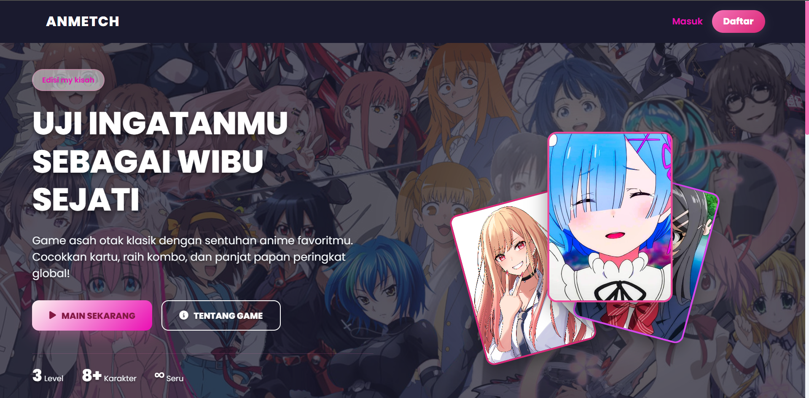
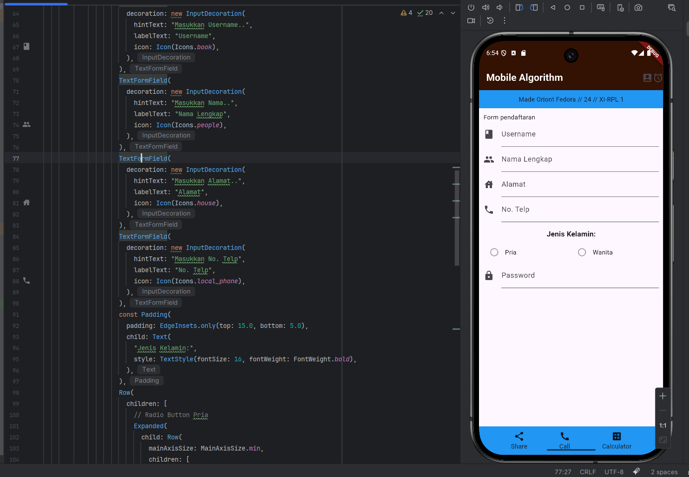
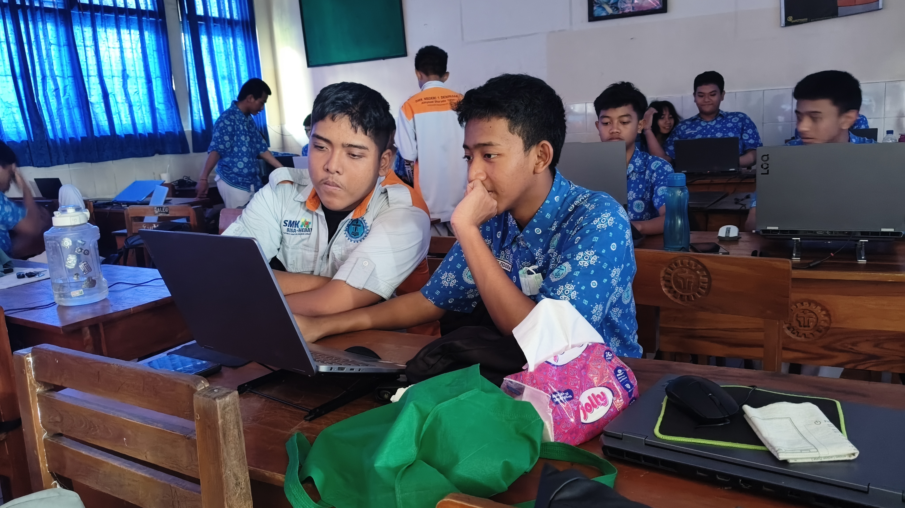
Poland Festival Gaming Roadshow
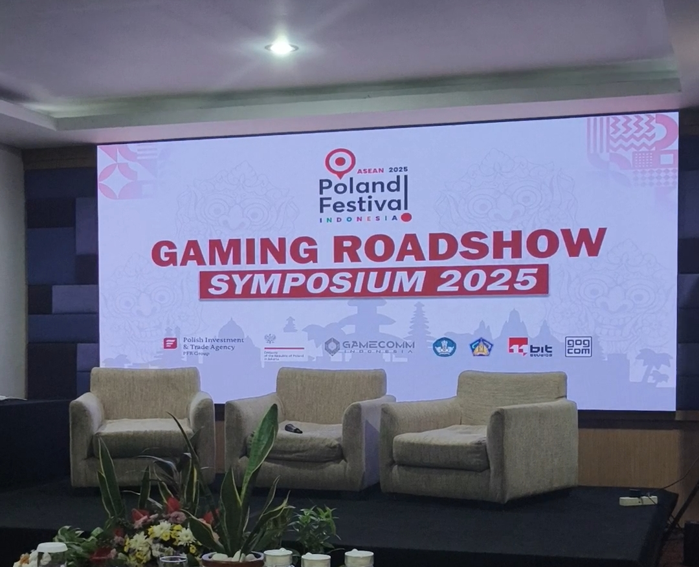
Saya mengikuti seminar tentang pengembangan video game yang berlokasi di Quest san hotel denpasar, saya belajar banyak hal seperti strategi marketing, pentingnya aspek budaya dalam game
dan lainnya. Saya mendapatkan banyak pelajaran menarik serta kesempatan untuk menanyakan beberapa pertanyaan kepada pembicaranya
Lomba CTIT Vol 2 Kampus IDB Bali
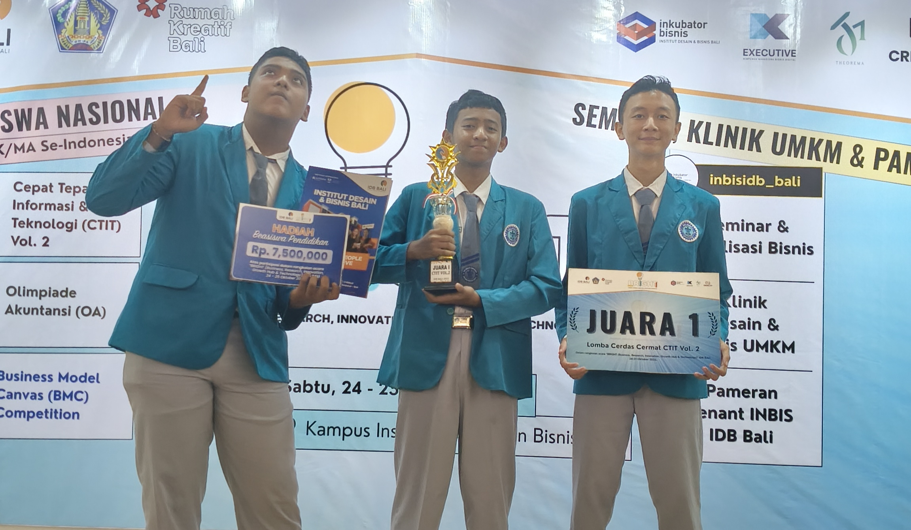
Pada akhir semester ganjil saya mengikuti perlombaan cerdas cermat IT bersama teman sekelas saya (Kasuma) dan teman saya dari TKJ (Gus Abi).
Kami sempat hampir tidak lolos babak penyisihan namun pada akhirnya mendapatkan juara 1. Materi meliputi arsitektur komputer, database, pengetahuan serta sejarah umum komputer.
Kami mendapatkan hadiah berupa beasiswa 7.5jt dan uang tunai 1.5jt yang kami bagi bertiga
Trivia Competition Bali Blockchain Summit 2025
Hanya seminggu setelah lomba di kampus IDB, saya dan kasuma mengikuti lomba cerdas cermat lain yaitu di Bali blockchain summit di Alaya.
Dalam hari pertama kami meraih skor tertinggi dalam setiap babak namun gagal mendapatkan posisi 3 besar dalam final. Menurut saya ini adalah pelajaran untuk belajar lebih keras
dan menerima kekalahan
Masa Liburan🏝️
Saya mendapat liburan selama total 4 minggu, yaitu 2 minggu liburan galungan kuningan sebelum ujian, dan 2 minggu liburan akhir semester setelah ujian.
Saya memanfaatkan waktu libur untuk mengerjakan projek game pribadi saya di construct 3 serta untuk healing dan berpergian. Diantara libur galungan dan kuningan saya dan keluarga saya berliburan ke Johor Bahru, Malaysia untuk menginap, rekreasi dan berbelanja
di sekitar area Legoland resort.
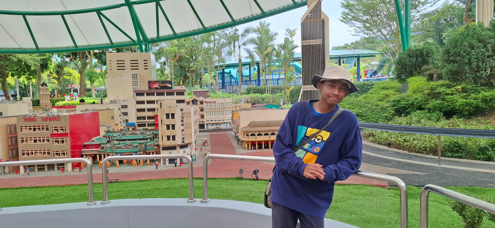
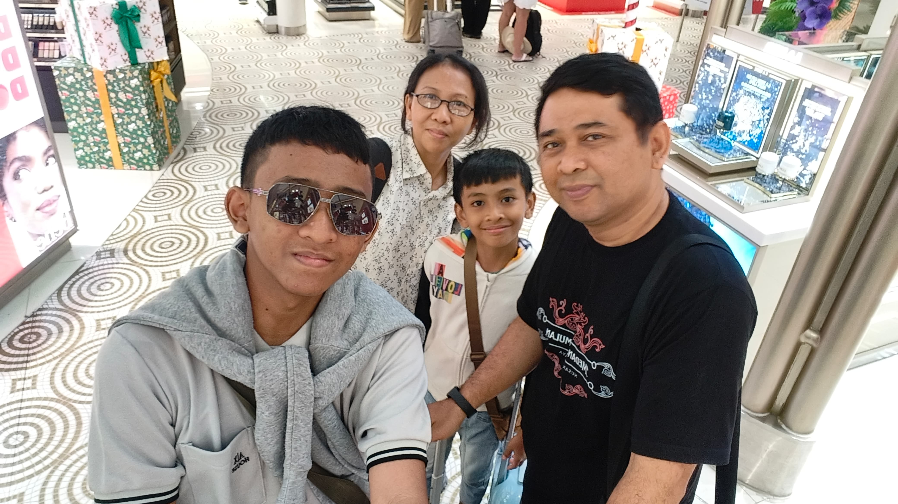
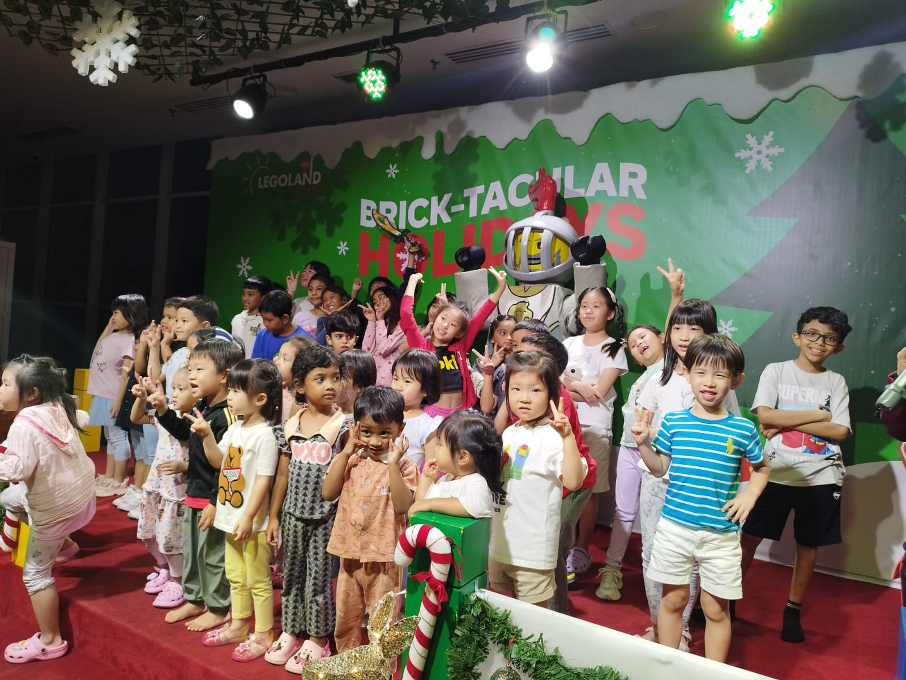
Hal lain yang saya lakukan selama liburan
Mengunjungi Event
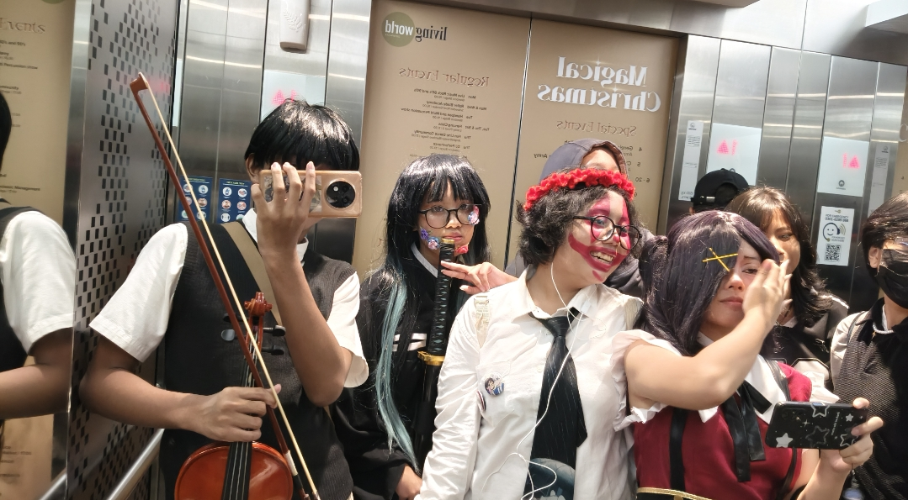
Saya mengunjungi banyak event cosplay bersama teman teman saya, biasanya bertempat di mall mall besar seperti Living World denpasar.
Saya mengajak beberapa teman dari kelas dan jurusan lain
Mengunjungi Marine Park
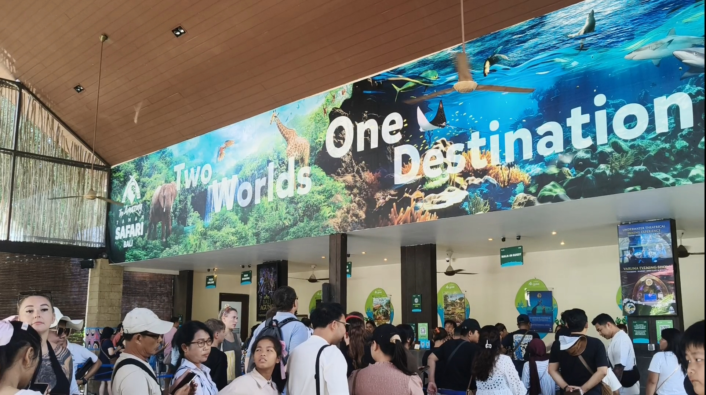
Saya mengunjungi banyak event cosplay bersama teman teman saya, biasanya bertempat di mall mall besar seperti Living World denpasar.
Saya mengajak beberapa teman dari kelas dan jurusan lain
Merayakan natal dan tahun baru
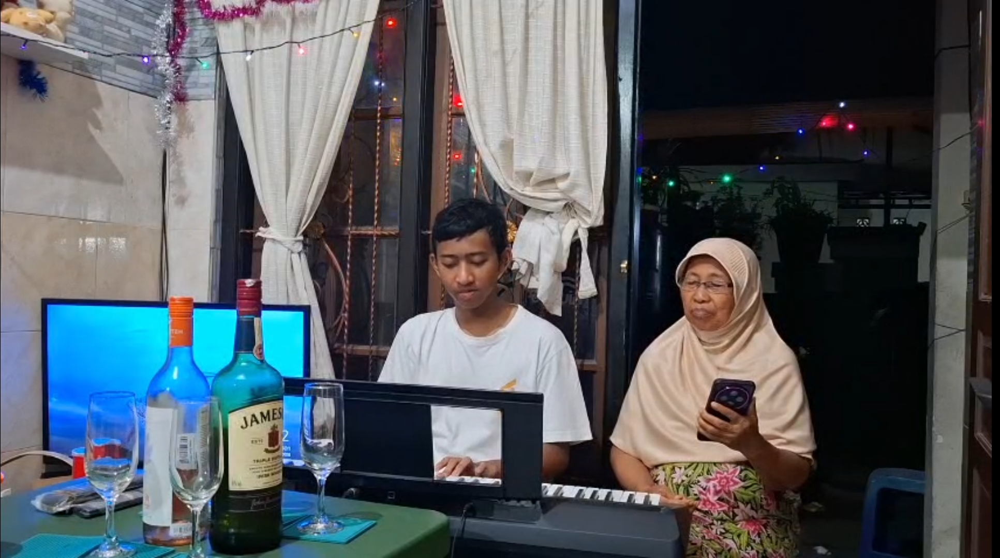
Saya merayakan natal dan tahun baru dengan makan malam dan berkumpul dengan keluarga serta nenek saya yang berkunjung dari mojokerto. Kami tidak bermain kembang api dan hanya menonton.
Resolusi Semester Genap📓
Pada semester genap saya bersemangat untuk mempelajari framework, bahasa pemrograman serta tools tools baru lainnya. Saya juga bersemangat untuk melatih diri saya untuk LKS Cybersecurity
Saya harap saya bisa menaikkan nilai saya di mata pelajaran non jurusan seperti PPKN dan Bahasa Bali. Jika sanggup, saya juga mengincar posisi 3 besar serta saya menargetkan projek pribadi saya untuk selesai sebelum saya naik kelas 12